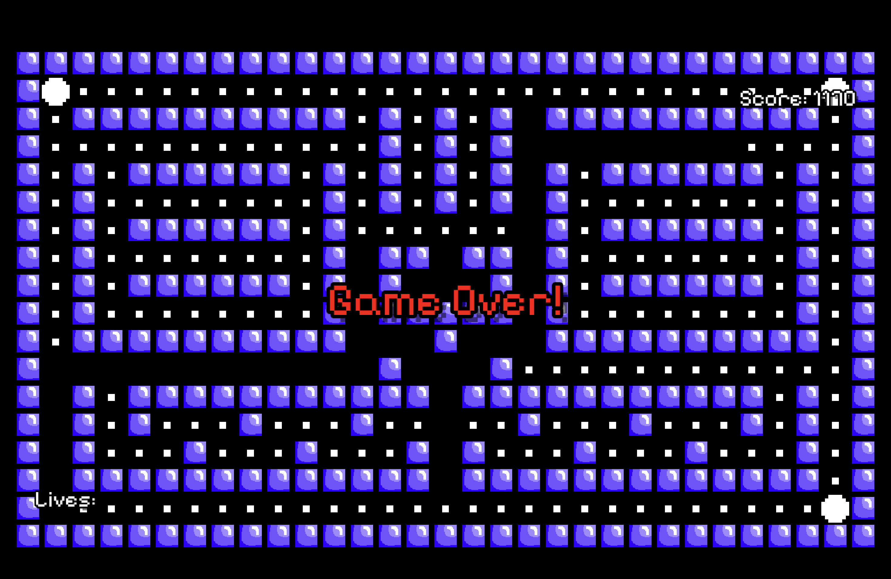

About the Game
Pac Survivor is an exciting game that combines classic Pac-Man elements with survival mechanics.
Context: This game was originally made as a class project (Pacman Battle Royale 99; see the projects page). But I decided to remake it "from the bottom to the top" - Megan Trainor. The orignal version did not have the best coding practices, like lines of cod for UI used in pac man or vice versa. Also, we did not focus too much on sound design (and I am usually a stickler for it), so I revamped the audio experience to make it more immersive. This is what to expect from the final version!
Features
How to read text:
Underline = New feature not present in orignal version
- Added Pacman Movement and 1st level layout
- Added
bone crack, music, and sounds in game files - Added waka-waka sound pacman makes when eating pellets
- Added Score text in UI
- Added ghosts with eye movment
- Added custom behavior for each ghost (Blinky = chasing pacman; Pinky = same as Blinky but also fast; Inky = ambusher; Clyde = randomizer...)
- Added power pellet
- Added different states for ghosts: run, def, eaten, scatter,
- Added chase state for ghosts in pacman is within line of sight
- Added main menu
- Added sounds for ghosts
- Added fruit and chase music
- Added game over text overlay
Screenshots

The Current main menu as of 11/6!

The Start screen for Pac Survivor!
What happens when you lose the game!
Development Status
Right now, I am working on implementing the unique features that my group members added to the original version: unique ghost behaviors (going through walls, shooting bullets, orbiting fireball, etc.), a way to save your score(s), powerups (speed, sprint, shooting stun bullets, magnet, pushback, etc.), a shop scene for upgrading pacman.